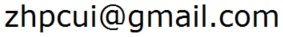

I am currently a post-doctoral researcher with Prof. Marc Pollefeys at the Computer Vision and Geometry Group, ETH Zurich. I was a member of the GrUVi lab at Simon Fraser University, where I obtianed my Ph.D. under the supervision of Prof. Ping Tan. Before joining SFU, I was a Ph.D. candidate supervised by Prof. Ping Tan at National University of Singapore.
Email:  Google Scholar
RESEARCH: My research interests include computer vision and computer graphics.
PUBLICATIONS:
- Polarimetric Dense Monocular SLAM
Luwei Yang*, Feitong Tan*, Ao Li, Zhaopeng Cui, Yasutaka Furukawa, and Ping Tan. ; [PAPER]
IEEE Conference on Computer Vision and Pattern Recognition (CVPR), Salt Lake City, Hawaii, Utah, 2018.
- Time Slice Video Synthesis by Robust Video Alignment
Zhaopeng Cui, Oliver Wang, Ping Tan, and Jue Wang. [PAPER(17.8MB)] [PROJECT PAGE]
ACM Transactions on Graphics (Special Issue of SIGGRAPH) , Vol. 36, No. 4, Article 131, 2017.
- Polarimetric Multi-View Stereo
Zhaopeng Cui, Jinwei Gu, Boxin Shi, Ping Tan, and Jan Kautz. ; [PAPER(4.01MB)] [PROJECT PAGE]
IEEE Conference on Computer Vision and Pattern Recognition (CVPR), Honolulu, Hawaii, USA, 2017.
- Global Structure-from-Motion by Similarity Averaging
Zhaopeng Cui and Ping Tan. [PAPER] [PROJECT PAGE];
IEEE International Conference on Computer Vision (ICCV), Santiago, Chile, 2015.
- Linear Global Translation Estimation with Feature Tracks
Zhaopeng Cui, Nianjuan Jiang, Chengzhou Tang, and Ping Tan. [PAPER]
British Machine Vision Conference (BMVC), Swansea, UK, 2015.
- A Global Linear Method for Camera Pose Registration
Nianjuan Jiang*, Zhaopeng Cui*, and Ping Tan. [PAPER] [SLIDES] [PROJECT PAGE]
IEEE International Conference on Computer Vision (ICCV), Sydney, Australia, 2013. (Oral, *equal contribution)
- A New Fast Motion Estimation Algorithm Based on the Loop-Epipolar Constraint for Multiview Video Coding.
Zhaopeng Cui, Guang Jiang, Shuai Yang, and Chengke Wu.
Signal Processing: Image Communication, Vol.27, pp. 172-179, 2012.
- A Novel Homography-Based Search Algorithm for Block Motion Estimation in Video Coding
Zhaopeng Cui, Guang Jiang, Dujuan Wang, and Chengke Wu.
IEEE International Conference on Multimedia and Expo (ICME), Barcelona, Spain, 2011.
- Octagonal Search Algorithm with Early Termination for Fast Motion Estimation on H.264.
Zhaopeng Cui, Dujuan Wang, Guang Jiang, and Chengke Wu.
International Conference on Information Assurance and Security (IAS), Xi'an, China, 2009.
PREPRINT::
Zhaopeng Cui, Lionel Heng, Ye Chuan Yeo, Andreas Geiger, Marc Pollefeys, and Torsten Sattler.
[PAPER]
arXiv preprint arXiv:1809.06132, 2018.
Marcel Geppert, Peidong Liu, Zhaopeng Cui, Marc Pollefeys, and Torsten Sattler.
[PAPER]
arXiv preprint arXiv:1809.06445, 2018.
Lionel Heng, Benjamin Choi, Zhaopeng Cui, Marcel Geppert, Sixing Hu, Benson Kuan, Peidong Liu, Rang Nguyen, Ye Chuan Yeo, Andreas Geiger, Gim Hee Lee, Marc Pollefeys and Torsten Sattler.
[PAPER]
arXiv preprint arXiv:1809.05477, 2018.
|
Computer Vision and Geometry Group |
Friendly links:
|

|